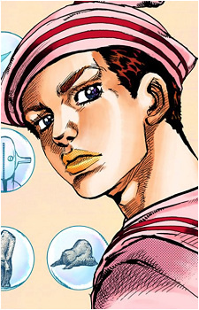

Дата рождения: 1992
Возраст: 19
Раса: Человек
Пол: Мужской
Национальность: Японец

Джоске Хигашиката
Информация
Описание
Джоске Хигашиката (東方 定助 Higashikata Jōsuke?) является протагонистом восьмой части серии Невероятные приключения ДжоДжо, ДжоДжолион, и восьмым ДжоДжо в серии.
Джоске - молодой человек, страдающий ретроградной амнезией и лишенный каких-либо воспоминаний до того, как его обнаружила Ясухо Хиросе возле Видящих Стен в городе Морио. Он посвящает себя раскрытию своей прежней личности и тех, кто изначально был с ним связан.
Изначальной личностью Джоске был Джозефуми Куджо (空条 仗世文 Kūjō Josefumi?), однако он стал нынешней личностью после слияния с частями тела Йошикаге Киры (吉良 吉影 Kira Yoshikage?). Джоске является пользователем стенда Soft & Wet и сохраняет его в своей исходной форме.
Джоске - молодой человек, страдающий ретроградной амнезией и лишенный каких-либо воспоминаний до того, как его обнаружила Ясухо Хиросе возле Видящих Стен в городе Морио. Он посвящает себя раскрытию своей прежней личности и тех, кто изначально был с ним связан.
Изначальной личностью Джоске был Джозефуми Куджо (空条 仗世文 Kūjō Josefumi?), однако он стал нынешней личностью после слияния с частями тела Йошикаге Киры (吉良 吉影 Kira Yoshikage?). Джоске является пользователем стенда Soft & Wet и сохраняет его в своей исходной форме.
Манга